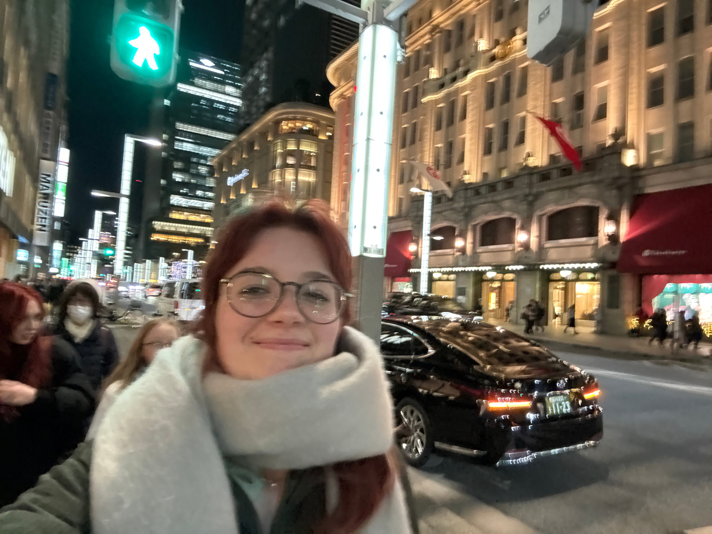

1. Narita
2. Tokoname
3. Nagoya
4. Nagakute
5. Shibuya and Takeshita Shopping Street
6. Tokyo
7. Ryoanji Temple
8. Kinkaku-ji Temple
9. Sanjusangen-do Temple
10. Kiyomizu-dera Temple
11. Senbon Tori Gates, Fukakusa Yabunouchicho
12. Osu Kannon Temple and Osu Shopping Street
13. Atsuta-jingu Shrine
14. Nara Park
15. Kōfuku-ji Temple
16. Kasugataisha Shrine
17. Nagoya Castle
18. Kiyosu

Figure 1. This is me in Tokyo, Japan!
Map authored by Avi Fleury.